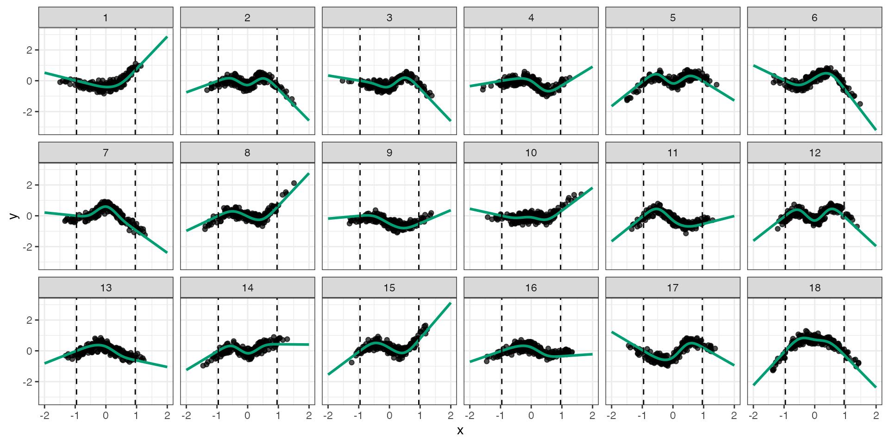

Overview
This vignette will guide you through reproducing the numerical simulations and figures of Christiansen et al. (2020). Each section is devoted to reproducing each image or simulation. Once NILE is installed, you can export the code in this guide by typing edit(vignette("vgn_reproduce_results")).
Figure 1 - Impossibility plots
library(ggplot2) library(gridExtra) library(grid) theme_set(theme_bw()) join.smoothly <- function(x,x1,x2,f1,f2,f1prime,f2prime){ y <- c(f1,f2,f1prime,f2prime) A <- matrix(c(1,x1,x1^2,x1^3, 1,x2,x2^2,x2^3, 0,1,2*x1,3*x1^2, 0,1,2*x2,3*x2^2), 4,4, byrow=TRUE) b <- solve(A,y) sapply(x, function(xx) sum(b*(xx^(0:3)))) } x <- seq(1,2,.01) # plot(x,join.smoothly(x,0,1,-1,1)) g.global <- function(a) a+1 g.global.prime <- function(a) 1 g <- function(a, supp = c(-1,1), eps = .5, C=5){ out <- numeric(length(a)) w.below <- which(a <= min(supp)-eps) w.midlow <- which(a > min(supp)-eps & a < min(supp)) w.within <- which(a >= min(supp) & a <= max(supp)) w.midup <- which(a > max(supp) & a < max(supp)+eps) w.above <- which(a >= max(supp)+eps) if(length(w.below)>0) out[w.below] <- out[w.above] <- C if(length(w.midlow)>0) out[w.midlow] <- join.smoothly(a[w.midlow],supp[1]-eps,supp[1],C,g.global(supp[1]),0,g.global.prime(supp[2])) if(length(w.within)>0) out[w.within] <- g.global(a[w.within]) if(length(w.midup)>0) out[w.midup] <- join.smoothly(a[w.midup],supp[2], supp[2]+eps,g.global(supp[2]),C, g.global.prime(supp[2]),0) if(length(w.above)>0) out[w.above] <- C out } a <- seq(-2,2,length.out = 1000) # plot(a,g(a,eps=.5),type="l",lwd=5) n <- 200 beta <- 1 set.seed(1) # observational A <- runif(n,-1,1) H <- rnorm(n) X <- g(A, eps=.5, C=5) + H + .5*rnorm(n) Y <- beta*X + H + .5*rnorm(n) bOLS <- lm(Y~X)$coefficients # interventional Ai <- rep(1.5,n) Hi <- rnorm(n) Xi <- g(Ai, eps=.5, C=5) + Hi + .5*rnorm(n) Yi <- beta*Xi + Hi + .5*rnorm(n) df <- data.frame(X=c(X,Xi), A=c(A,Ai), Y=c(Y,Yi), setting = factor(rep(c("observational", "interventional"), each=n), levels = c("observational", "interventional"))) x.seq <- seq(min(df$X), max(df$X), length.out = 100) df.line <- data.frame(x = rep(x.seq, 2), y = c(bOLS[1] + bOLS[2]*x.seq, x.seq), model = factor(rep(c("candidate", "causal"), each = length(x.seq)))) pXY <- ggplot() + geom_point(data=df, aes(X,Y, col=setting, shape = setting), alpha=.7, size=3) + scale_color_manual(values = c("black", "red")) + geom_line(data=subset(df.line, model == "candidate"), aes(x,y),size=1, col = "blue") + geom_line(data=subset(df.line, model == "causal"), aes(x,y),size=1, col = "#009E73", lty = "dashed") + annotate(geom = "text", x = -1, y = 5, label = "training data") + annotate(geom = "text", x = 5, y = -1, label = "test data") + annotate(geom = "text", x = 3, y = 10, label = "candidate model") + # annotate(geom = "text", x = 6, y = 1, label = "causal model") + annotate(geom = "text", x = 7.5, y = 6.5, label = "f", col = "#009E73") + geom_segment(aes(x = -.5, y = 4, xend = 0, yend =2), arrow = arrow(length = unit(0.3, "cm"))) + geom_segment(aes(x = 5, y = 0, xend = 5, yend = 2), arrow = arrow(length = unit(0.3, "cm"))) + geom_segment(aes(x = 5, y = 10, xend = 6, yend = 10), arrow = arrow(length = unit(0.3, "cm"))) + # geom_segment(aes(x = 6, y = 2, xend = 6.6, yend = 6.3), # arrow = arrow(length = unit(0.3, "cm"))) + xlab("x") + ylab("y") + # geom_abline(intercept = bOLS[1], slope = bOLS[2]) + theme(legend.position = "none", text = element_text(size=15), plot.title = element_text(size = 14, hjust=.5)) a.seq <- seq(-2,2,length.out = 1000) df.A <- data.frame(a = a.seq, g = g(a.seq)) df.A$seq <- factor(sapply(1:nrow(df.A), function(i) ifelse(df.A$a[i] < -1, 1, ifelse(df.A$a[i] <= 1, 2, 3)))) grid.a <- seq(-.9, .9, .2) hist.a <- sapply(grid.a, function(g) sum(abs(A-g) < .1)) m <- max(hist.a) hist.a <- 4*hist.a/m df.hist <- data.frame(a=c(grid.a, 1.55), h = c(hist.a, 4), data = c(rep("1",length(grid.a)), "2")) pA <- ggplot(df.A, aes(a,g)) + geom_segment(aes(x = 1, y = .8, xend = 1.4, yend = .1), arrow = arrow(length = unit(0.3, "cm"))) + geom_line(aes(lty = seq), size=1, col = "black") + # geom_line(size=1, col = "black") + xlab("a") + ylab("") + geom_bar(data=df.hist, aes(x=a,y=h,fill=data), alpha=.2, stat = "identity") + annotate(geom = "text", x = -1.6, y = 4.5, label = "g") + geom_segment(aes(x = -.8, y = 3.5, xend = -1, yend = 3.5), arrow = arrow(length = unit(0.3, "cm"), angle = 90)) + geom_segment(aes(x = .8, y = 3.5, xend = 1, yend = 3.5), arrow = arrow(length = unit(0.3, "cm"), angle = 90)) + annotate(geom = "text", x = 0, y = 3.5, label = "training support") + annotate(geom = "text", x = .9, y = 1, label = "intervention") + scale_fill_manual(values= c("black", "red")) + scale_linetype_manual(values = c("dashed", "solid", "dashed")) + theme(legend.position = "none", text = element_text(size=15), plot.title = element_text(size = 14, hjust=.5)) all.A <- arrangeGrob(pA, pXY, ncol = 2, top = textGrob("support-extending interventions on A", gp=gpar(fontsize=15))) # # grid.arrange(pA, pXY, ncol=2) # # pdf("../figures/impossibility_AtoX_nonlinear.pdf", width = 8, height = 3.5) # grid.arrange(pA, pXY, ncol=2, top = "support-extending interventions on A") # dev.off() ####################### ## interventions on X ####################### f.global <- function(x) -x f.global.prime <- function(x) -1 f <- function(a, supp = c(-1,1), eps = 1, C=c(-5,5)){ out <- numeric(length(a)) w.below <- which(a <= min(supp)-eps) w.midlow <- which(a > min(supp)-eps & a < min(supp)) w.within <- which(a >= min(supp) & a <= max(supp)) w.midup <- which(a > max(supp) & a < max(supp)+eps) w.above <- which(a >= max(supp)+eps) if(length(w.below)>0) out[w.below] <- C[1] if(length(w.midlow)>0) out[w.midlow] <- join.smoothly(a[w.midlow],supp[1]-eps,supp[1],C[1],f.global(supp[1]),20,f.global.prime(supp[2])) if(length(w.within)>0) out[w.within] <- f.global(a[w.within]) if(length(w.midup)>0) out[w.midup] <- join.smoothly(a[w.midup],supp[2],supp[2]+eps,f.global(supp[2]),C[2], f.global.prime(supp[2]),20) if(length(w.above)>0) out[w.above] <- C[2] out } x <- seq(-2,2,length.out = 1000) # plot(x,f(x,eps=1),type="l",lwd=5) n <- 200 beta <- 1 set.seed(1) # observational A <- runif(n,-1,1) H <- runif(n,-1,1) X <- .4*H + .4*A + .2*runif(n,-1,1) Y <- f(X) + .5*H + .5*rnorm(n) Ai <- runif(n,-1,1) Hi <- runif(n,-1,1) Xi <- runif(n,1.5,2) Yi <- f(Xi) + Hi + .5*rnorm(n) df1 <- data.frame(X=c(X,Xi), A=c(A,Ai), Y=c(Y,Yi), setting = factor(rep(c("observational", "interventional"), each=n), levels = c("observational", "interventional"))) x.seq <- seq(-2,2,length.out = 1000) df1.line <- data.frame(x = rep(x.seq, 2), y = c(-x.seq, f(x.seq)), model = factor(rep(c("candidate", "causal"), each = length(x.seq)))) pXY1 <- ggplot() + geom_point(data=df1, aes(X,Y, col=setting, shape = setting), alpha=.7, size=3) + scale_color_manual(values = c("black", "red")) + geom_line(data=subset(df1.line, model == "candidate"), aes(x,y),size=1, col = "blue") + geom_line(data=subset(df1.line, model == "causal"), aes(x,y),size=1, col = "#009E73", lty = "dashed") + annotate(geom = "text", x = 0, y = 3.5, label = "training data") + annotate(geom = "text", x = 1, y = 5.5, label = "test data") + annotate(geom = "text", x = -1.2, y = 5.5, label = "candidate model") + annotate(geom = "text", x = -1.5, y = -1, label = "f", col = "#009E73") + ggtitle("support-extending interventions on X") + xlab("x") + ylab("y") + # annotate(geom = "text", x = 6, y = 1, label = "causal model") + geom_segment(aes(x = 0, y = 3, xend = 0, yend = 1.5), arrow = arrow(length = unit(0.3, "cm"))) + geom_segment(aes(x = 1.2, y = 5, xend = 1.6, yend = 4), arrow = arrow(length = unit(0.3, "cm"))) + geom_segment(aes(x = -1.2, y = 5, xend = -1.6, yend = 2.5), arrow = arrow(length = unit(0.3, "cm"))) + geom_segment(aes(x = -.8, y = -5, xend = -1, yend = -5), arrow = arrow(length = unit(0.3, "cm"), angle = 90)) + geom_segment(aes(x = .8, y = -5, xend = 1, yend = -5), arrow = arrow(length = unit(0.3, "cm"), angle = 90)) + geom_segment(aes(x = 1.5, y = -5, xend = 2, yend = -5), arrow = arrow(length = unit(0.3, "cm"), angle = 90)) + geom_segment(aes(x = 2, y = -5, xend = 1.5, yend = -5), arrow = arrow(length = unit(0.3, "cm"), angle = 90)) + annotate(geom = "text", x = 0, y = -5, label = "training support") + coord_cartesian(ylim=c(-5.5,6)) + annotate(geom = "text", x = 1.5, y = -3.5, label = "test support") + # geom_segment(aes(x = 1, y = -3.5, xend = 1.5, yend = -4), # arrow = arrow(length = unit(0.3, "cm"))) + # xlab("x") + ylab("y") + # geom_abline(intercept = bOLS[1], slope = bOLS[2]) + theme(legend.position = "none", text = element_text(size=15), plot.title = element_text(size = 14, hjust=.5)) grid.arrange(pXY1, all.A,ncol=2, widths = c(1,2))

Figure 2 - NILE vs. other methods
library(NILE) library(R.utils) library(splines) library(np) # X has fixed variance 1/3 n <- 200 fact <- 1 # three times the desired variance of X df.X <- 50 ## missing settings alphaA <- sqrt(fact/3) alphaH <- sqrt(2*fact/3) alphaEps <- 0 ## quantiles for different settings set.seed(1) N <- 100000 A <- runif(N,-1,1) H <- runif(N,-1,1) X <- alphaA*A + alphaH*H + alphaEps*runif(N,-1,1) q <- quantile(X, probs = c(.05,.95)) qX <- c(-1,1)*(q[2]-q[1])/2 suppX <- c(-1,1)*(alphaA + alphaH + alphaEps) n.splines.true <- 4 set.seed(4) beta <- runif(n.splines.true, -1,1) fX <- function(x=x.new, qx=qX, beta=beta){ bx <- ns(x, knots = seq(from=qx[1], to=qx[2], length.out=(n.splines.true+1))[-c(1,n.splines.true+1)], Boundary.knots = qx) bx%*%beta } A <- runif(n,-1,1) H <- runif(n,-1,1) X <- alphaA*A + alphaH*H + alphaEps*runif(n,-1,1) Y <- fX(X,qX,beta) + .3*H + .2*runif(n,-1,1) x.new <- seq(-2,2,length.out = 100) f.new <- fX(x.new, qX, beta) plot(X,Y) lines(x.new, f.new) pred.frame <- NULL k <- 0 Nsim <- 20 for(i in 1:Nsim){ k <- k+1 set.seed(k) print(paste("sim = ", i)) A <- runif(n,-1,1) H <- runif(n,-1,1) X <- alphaA*A + alphaH*H + alphaEps*runif(n,-1,1) Y <- fX(X,qX,beta) + .3*H + .2*runif(n,-1,1) fit.ols <- tryCatch({withTimeout({NILE(Y=Y,X=X,A=A,lambda.star=0,df=df.X,x.new=x.new,plot=FALSE,par.a=list(lambda=0.1))$pred}, timeout = 180, onTimeout = "error")}, error=function(e){ print(paste("ERROR OLS: ", e)) rep(NA, length(x.new)) }) nile <- tryCatch({withTimeout({NILE(Y=Y,X=X,A=A,lambda.star="test",df=df.X,x.new=x.new,plot=FALSE)}, timeout = 180, onTimeout = "error")}, error=function(e){ print(paste("ERROR NILE: ", e)) list(pred = rep(NA, length(x.new)), lambda.star = NA) }) fit.nile <- nile$pred lambda.star <- nile$lambda.star fit.npregiv <- tryCatch({withTimeout({npregiv(y=Y,z=X,w=A,zeval=x.new)$phi.eval}, timeout = 180, onTimeout = "error")}, error=function(e){ print(paste("ERROR NPREGIV: ", e)) rep(NA, length(x.new)) }) pred.frame.loop <- data.frame(x = x.new, fhat = c(fit.ols, fit.nile, fit.npregiv), ftrue = rep(f.new, 3), method = rep(c("OLS", "NILE", "NPREGIV"), each = length(x.new)), lambda.star = lambda.star, alphaA = alphaA, alphaH = alphaH, alphaEps = alphaEps, qXmin = min(qX), qXmax = max(qX), suppXmin = min(suppX), suppXmax = max(suppX), sim = i) pred.frame <- rbind(pred.frame, pred.frame.loop) write.table(pred.frame, "overlay_estimates_strongconf.txt", quote = FALSE) }
library(ggplot2) library(reshape2) library(gridExtra) library(R.utils) library(splines) library(np) theme_set(theme_bw()) pred.frame <- read.table("overlay_estimates_strongconf.txt", header = TRUE) fact <- 1 # three times the desired variance of X ## missing settings alphaA <- sqrt(1/3) alphaH <- sqrt(2/3) alphaEps <- 0 ## quantiles for different settings qX <- c(pred.frame$qXmin[1], pred.frame$qXmax[1]) suppX <- c(pred.frame$suppXmin[1], pred.frame$suppXmax[1]) n.splines.true <- 4 fX <- function(x=x.new, qx=qX, beta=beta){ bx <- ns(x, knots = seq(from=qx[1], to=qx[2], length.out=(n.splines.true+1))[-c(1,n.splines.true+1)], Boundary.knots = qx) bx%*%beta } n.plt <- 200 set.seed(4) beta <- runif(n.splines.true, -1,1) A1.plt <- runif(n.plt,-1,1) H1.plt <- runif(n.plt,-1,1) X1.plt <- alphaA*A1.plt + alphaH*H1.plt + alphaEps*runif(n.plt,-1,1) Y1.plt <- fX(X1.plt,qX,beta) + .3*H1.plt + .2*runif(n.plt,-1,1) plt.frame <- data.frame(x=X1.plt, y=Y1.plt) # ftrue.frame <- data.frame(x=x.pred, ftrue=f.true) pred.frame$method <- factor(pred.frame$method, levels = c("OLS", "NILE", "NPREGIV")) p <- ggplot(pred.frame) + geom_point(data=plt.frame, aes(x,y), alpha=.5) + geom_vline(xintercept = qX, lty = 2) + geom_line(aes(x, fhat, col = method, group = sim), size = .2) + geom_line(aes(x, ftrue), col = "#009E73", size=1, lty = "dashed") + scale_color_manual(values = c("#D55E00","#0072B2", "#CC79A7")) + # ggtitle("") facet_grid(.~method) + coord_cartesian(xlim=c(-2,2), ylim = c(-1, 1)) + theme(legend.position = "none") p pdf("overlay_estimates.pdf", width = 7, height = 2.5) p dev.off()
Figure 3 - Varying confounding
This experiment is computationally intensive, therefore it is advisable to run it in parallel. The number of simulations is 100, so one strategy is to run it in chunks of 10 simulations at a time.
For example, the first chunk of simulations can be run as follows.
SIM <- 1:10
library(NILE) library(R.utils) library(splines) library(np) # X has fixed variance 1/3 n <- 200 fact <- 1 # three times the desired variance of X df.X <- 50 # number of splines used ## missing settings alphaA.seq <- rep(sqrt(fact/3),3) alphaH.seq <- c(0,sqrt(fact/3),sqrt(2*fact/3)) alphaEps.seq <- sqrt(fact - alphaA.seq^2 - alphaH.seq^2) ## check alphaA.seq^2 + alphaH.seq^2 + alphaEps.seq^2 ## quantiles for different settings set.seed(1) n.exp <- length(alphaA.seq) qX.mat <- sapply(1:n.exp, function(i){ N <- 100000 alphaA <- alphaA.seq[i] alphaH <- alphaH.seq[i] alphaEps <- alphaEps.seq[i] A <- runif(N,-1,1) H <- runif(N,-1,1) X <- alphaA*A + alphaH*H + alphaEps*runif(N,-1,1) q <- quantile(X, probs = c(.05,.95)) c(-1,1)*(q[2]-q[1])/2 }) suppX.mat <- sapply(1:n.exp, function(i){ alphaA <- alphaA.seq[i] alphaH <- alphaH.seq[i] alphaEps <- alphaEps.seq[i] c(-1,1)*(alphaA + alphaH + alphaEps) }) n.splines.true <- 4 fX <- function(x, qx, beta){ bx <- ns(x, knots = seq(from=qx[1], to=qx[2], length.out=(n.splines.true+1))[-c(1,n.splines.true+1)], Boundary.knots = qx) bx%*%beta } pred.frame <- NULL meta.frame <- NULL x.new <- seq(-2,2,length.out = 100) k <- max(SIM)*n.exp for(i in SIM){ for(j in 1:n.exp){ k <- k+1 set.seed(k) print(paste("sim = ", i, ", alphaseq = ", j)) alphaA <- alphaA.seq[j] alphaEps <- alphaEps.seq[j] alphaH <- alphaH.seq[j] qX <- qX.mat[,j] suppX <- suppX.mat[,j] beta <- runif(n.splines.true, -1,1) A <- runif(n,-1,1) H <- runif(n,-1,1) X <- alphaA*A + alphaH*H + alphaEps*runif(n,-1,1) Y <- fX(X,qX,beta) + .3*H + .2*runif(n,-1,1) f.new <- fX(x.new,qX,beta) ols <- tryCatch({ t1 <- Sys.time() res <- withTimeout({NILE(Y=Y,X=X,A=A,lambda.star=0,df=df.X,x.new=x.new,plot=FALSE,par.a=list(lambda=0.1))}, timeout = 180, onTimeout = "silent") t2 <- Sys.time() if(!is.null(res)){ out <- list(time = as.numeric(t2-t1), fit = res$pred, timeout = FALSE, error = FALSE) } if(is.null(res)){ out <- list(time = 180, fit = rep(NA, length(x.new)), timeout = TRUE, error = FALSE) } out }, error=function(e){ print(paste("ERROR OLS: ", e)) list(time = NA, fit = rep(NA, length(x.new)), timeout = NA, error = TRUE) }) nile <- tryCatch({ t1 <- Sys.time() res <- withTimeout({NILE(Y=Y,X=X,A=A,lambda.star="test",df=df.X,x.new=x.new,plot=FALSE)}, timeout = 180, onTimeout = "silent") t2 <- Sys.time() if(!is.null(res)){ out <- list(time = as.numeric(t2-t1), lambda = res$lambda.star, fit = res$pred, timeout = FALSE, error = FALSE) } if(is.null(res)){ out <- list(time = 180, lambda = NA, fit = rep(NA, length(x.new)), timeout = TRUE, error = FALSE) } out }, error=function(e){ print(paste("ERROR NILE: ", e)) list(time = NA, lambda = NA, fit = rep(NA, length(x.new)), timeout = NA, error = TRUE) }) npregiv <- tryCatch({ t1 <- Sys.time() res <- withTimeout({npregiv(y=Y,z=X,w=A,zeval=x.new)}, timeout = 180, onTimeout = "silent") t2 <- Sys.time() if(!is.null(res)){ out <- list(time = as.numeric(t2-t1), fit = res$phi.eval, timeout = FALSE, error = FALSE) } if(is.null(res)){ out <- list(time = 180, fit = rep(NA, length(x.new)), timeout = TRUE, error = FALSE) } out }, error=function(e){ print(paste("ERROR OLS: ", e)) list(time = NA, fit = rep(NA, length(x.new)), timeout = NA, error = TRUE) }) meta.frame.loop <- data.frame(method = c("OLS", "NILE", "NPREGIV"), time = c(ols$time, nile$time, npregiv$time), timeout = c(ols$timeout, nile$timeout, npregiv$timeout), error = c(ols$error, nile$error, npregiv$error), lambda.star = nile$lambda, alphaA = alphaA, alphaH = alphaH, alphaEps = alphaEps, qXmin = min(qX), qXmax = max(qX), suppXmin = min(suppX), suppXmax = max(suppX), experiment = j, sim = i) meta.frame <- rbind(meta.frame, meta.frame.loop) pred.frame.loop <- data.frame(x = x.new, fhat = c(ols$fit, nile$fit, npregiv$fit), ftrue = rep(f.new, 3), method = rep(c("OLS", "NILE", "NPREGIV"), each = length(x.new)), lambda.star = nile$lambda, alphaA = alphaA, alphaH = alphaH, alphaEps = alphaEps, qXmin = min(qX), qXmax = max(qX), suppXmin = min(suppX), suppXmax = max(suppX), experiment = j, sim = i) pred.frame <- rbind(pred.frame, pred.frame.loop) write.table(meta.frame, paste0("varying_confounding_meta", min(SIM), ".txt"), quote = FALSE) write.table(pred.frame, paste0("varying_confounding_fit", min(SIM), ".txt"), quote = FALSE) } }
Once the results are saved as .txt files, you can produce the plots as follows.
library(ggplot2) library(reshape2) library(gridExtra) theme_set(theme_bw()) pred.frame <- rbind(read.table("varying_confounding_fit1.txt", header = TRUE), read.table("varying_confounding_fit11.txt", header = TRUE), read.table("varying_confounding_fit21.txt", header = TRUE), read.table("varying_confounding_fit31.txt", header = TRUE), read.table("varying_confounding_fit41.txt", header = TRUE), read.table("varying_confounding_fit51.txt", header = TRUE), read.table("varying_confounding_fit61.txt", header = TRUE), read.table("varying_confounding_fit71.txt", header = TRUE), read.table("varying_confounding_fit81.txt", header = TRUE), read.table("varying_confounding_fit91.txt", header = TRUE)) ## avg lambdastar df.summary <- aggregate(lambda.star ~ experiment, pred.frame, mean, na.rm=1) ## n <- nrow(pred.frame) n.x <- length(unique(pred.frame$x)) n.m <- length(unique(pred.frame$method)) n.sim <- length(unique(pred.frame$sim)) n.exp <- n/(n.x*n.m*n.sim) var_xi_Y <- (1/3)*(.3^2+.2^2) # pred.frame <- subset(pred.frame, method != "IV") pred.frame$sq.err <- (pred.frame$fhat-pred.frame$ftrue)^2 pred.frame$x.abs <- round(abs(pred.frame$x),2) pred.frame$alphaA <- round(pred.frame$alphaA,3) pred.frame$alphaH <- round(pred.frame$alphaH,3) pred.frame$alphaEps <- round(pred.frame$alphaEps,3) pred.frame$qXmax <- round(pred.frame$qXmax,3) pred.frame$lambda.star <- round(pred.frame$lambda.star,3) error.frame.x.abs <- aggregate(sq.err ~ method + alphaH + qXmax + x.abs + sim, pred.frame, mean) error.frame.x.abs <- error.frame.x.abs[order(error.frame.x.abs$method, error.frame.x.abs$alphaH, error.frame.x.abs$sim),] n.x.abs <- length(unique(error.frame.x.abs$x.abs)) error.frame.x.abs$worst.case.mse <- sapply(1:nrow(error.frame.x.abs), function(i) max(error.frame.x.abs$sq.err[(1+floor((i-1)/n.x.abs)*n.x.abs):i])) + var_xi_Y # error.frame.x.abs$method <- factor(error.frame.x.abs$method, # levels = c("OLS", "NILE", "NPREGIV", "ORACLE")) error.frame.x.abs$alphaH <- factor(error.frame.x.abs$alphaH, levels = sort(unique(error.frame.x.abs$alphaH)), labels = c(expression(paste("(", alpha[A], ",", alpha[H], ",", alpha[epsilon], ") = (", sqrt(1/3),",", 0,",", sqrt(2/3), ")")), expression(paste("(", alpha[A],",", alpha[H],",", alpha[epsilon], ") = (", sqrt(1/3),",", sqrt(1/3),",", sqrt(1/3), ")")), expression(paste("(", alpha[A], ",",alpha[H],",", alpha[epsilon], ") = (", sqrt(1/3),",", sqrt(2/3),",", 0, ")")))) error.frame.x.abs.avg <- aggregate(worst.case.mse ~ method + alphaH + qXmax + x.abs, error.frame.x.abs, mean) tmp <- subset(error.frame.x.abs.avg, method == "OLS") tmp$worst.case.mse <- var_xi_Y tmp$method <- "ORACLE" error.frame.x.abs.avg <- rbind(error.frame.x.abs.avg, tmp) error.frame.x.abs.avg$sim <- max(error.frame.x.abs$sim+1) error.frame.x.abs.avg$sq.err <- NA error.frame.x.abs.avg$avg <- TRUE error.frame.x.abs$avg <- FALSE error.frame.x.abs <- rbind(error.frame.x.abs, error.frame.x.abs.avg) error.frame.x.abs$method <- factor(error.frame.x.abs$method, levels = c("OLS", "NILE", "NPREGIV", "ORACLE")) qX.frame <- subset(error.frame.x.abs.avg, method == "OLS" & x.abs == 2) rects1 <- qX.frame rects1$xstart <- 0 rects1$xend <- rects1$qXmax rects2 <- qX.frame rects2$xstart <- rects2$qXmax rects2$xend <- 2 rects <- rbind(rects1, rects2) rects$col <- factor(rep(1:2, each=n.exp)) ############# ## plotting ############# p <- ggplot() + # geom_density(data=df.plt, aes(x=x.plt),alpha=.5) + geom_rect(data = rects, aes(xmin = xstart, xmax = xend, ymin = -Inf, ymax = Inf, fill=col), alpha=.1) + geom_line(data=error.frame.x.abs, aes(x.abs, worst.case.mse, col=method, lty = method, group = interaction(method,sim,avg), alpha=avg, size = avg)) + #geom_line(data=error.frame.x.abs.avg, aes(x.abs, worst.case.mse, col=method, lty = method), size=1) + # facet_wrap(. ~ alphaA + alphaH + alphaEps, ncol=5) + # geom_vline(aes(xintercept = qXmax),lty=2) + # geom_hline(yintercept = var_xi_Y,lty=2, col = "black") + facet_grid(. ~ alphaH, labeller = label_parsed) + # ggtitle(expression(paste("constant instrument strength alpha_A = ", 1/sqrt(3)))) + # ggtitle(expression(paste("constant instrument strength ", alpha[A], " = ", sqrt(1/3)))) + # gtitle("generalization performance for different confounding strength") + scale_size_manual(values = c(.2, 1)) + scale_alpha_manual(values = c(.2, 1)) + scale_color_manual(values = c("#D55E00", #"#0072B2", "#0072B2", "#CC79A7", "#009E73")) + scale_linetype_manual(values = c(rep("solid",3), "dashed")) + scale_fill_manual(values = c("black", "transparent")) + coord_cartesian(xlim = c(0,2), ylim = c(0,.3)) + xlab("generalization to interventions up to strength") + ylab("worst-case MSE") + theme(plot.title = element_text(hjust=0.5), #legend.position = "none", legend.background = element_rect(fill = "transparent", colour = NA), legend.key = element_rect(fill = "transparent", colour = NA)) + guides(fill="none", lty= "none", size = "none", alpha = "none") p pdf("varying_confounding_with_variability.pdf", width = 8, height = 2.5) p dev.off()
Figure 4 - Varying instrument
This experiment is computationally intensive, therefore it is advisable to run it in parallel. The number of simulations is 100, so one strategy is to run it in chunks of 10 simulations at a time.
For example, the first chunk of simulations can be run as follows.
SIM <- 1:10
library(NILE) library(R.utils) library(splines) library(np) # X has fixed variance 1/3 n <- 200 fact <- 1 # three times the desired variance of X df.X <- 50 ## missing settings alphaA.seq <- sqrt(seq(0,2/3,length.out=5)) alphaH.seq <- rep(sqrt(fact/3),5) alphaEps.seq <- sqrt(fact - alphaA.seq^2 - alphaH.seq^2) ## check alphaA.seq^2 + alphaH.seq^2 + alphaEps.seq^2 ## quantiles for different settings set.seed(1) n.exp <- length(alphaA.seq) qX.mat <- sapply(1:n.exp, function(i){ N <- 100000 alphaA <- alphaA.seq[i] alphaH <- alphaH.seq[i] alphaEps <- alphaEps.seq[i] A <- runif(N,-1,1) H <- runif(N,-1,1) X <- alphaA*A + alphaH*H + alphaEps*runif(N,-1,1) q <- quantile(X, probs = c(.05,.95)) c(-1,1)*(q[2]-q[1])/2 }) suppX.mat <- sapply(1:n.exp, function(i){ alphaA <- alphaA.seq[i] alphaH <- alphaH.seq[i] alphaEps <- alphaEps.seq[i] c(-1,1)*(alphaA + alphaH + alphaEps) }) n.splines.true <- 4 fX <- function(x, qx, beta){ bx <- ns(x, knots = seq(from=qx[1], to=qx[2], length.out=(n.splines.true+1))[-c(1,n.splines.true+1)], Boundary.knots = qx) bx%*%beta } pred.frame <- NULL meta.frame <- NULL x.new <- seq(-2,2,length.out = 100) k <- max(SIM)*n.exp for(i in SIM){ for(j in 1:n.exp){ k <- k+1 set.seed(k) print(paste("sim = ", i, ", alphaseq = ", j)) alphaA <- alphaA.seq[j] alphaEps <- alphaEps.seq[j] alphaH <- alphaH.seq[j] qX <- qX.mat[,j] suppX <- suppX.mat[,j] beta <- runif(n.splines.true, -1,1) A <- runif(n,-1,1) H <- runif(n,-1,1) X <- alphaA*A + alphaH*H + alphaEps*runif(n,-1,1) Y <- fX(X,qX,beta) + .3*H + .2*runif(n,-1,1) f.new <- fX(x.new,qX,beta) ols <- tryCatch({ t1 <- Sys.time() res <- withTimeout({NILE(Y=Y,X=X,A=A,lambda.star=0,df=df.X,x.new=x.new,plot=FALSE,par.a=list(lambda=0.1))}, timeout = 180, onTimeout = "silent") t2 <- Sys.time() if(!is.null(res)){ out <- list(time = as.numeric(t2-t1), fit = res$pred, timeout = FALSE, error = FALSE) } if(is.null(res)){ out <- list(time = 180, fit = rep(NA, length(x.new)), timeout = TRUE, error = FALSE) } out }, error=function(e){ print(paste("ERROR OLS: ", e)) list(time = NA, fit = rep(NA, length(x.new)), timeout = NA, error = TRUE) }) nile <- tryCatch({ t1 <- Sys.time() res <- withTimeout({NILE(Y=Y,X=X,A=A,lambda.star="test",df=df.X,x.new=x.new,plot=FALSE)}, timeout = 180, onTimeout = "silent") t2 <- Sys.time() if(!is.null(res)){ out <- list(time = as.numeric(t2-t1), lambda = res$lambda.star, fit = res$pred, timeout = FALSE, error = FALSE) } if(is.null(res)){ out <- list(time = 180, lambda = NA, fit = rep(NA, length(x.new)), timeout = TRUE, error = FALSE) } out }, error=function(e){ print(paste("ERROR NILE: ", e)) list(time = NA, lambda = NA, fit = rep(NA, length(x.new)), timeout = NA, error = TRUE) }) npregiv <- tryCatch({ t1 <- Sys.time() res <- withTimeout({npregiv(y=Y,z=X,w=A,zeval=x.new)}, timeout = 180, onTimeout = "silent") t2 <- Sys.time() if(!is.null(res)){ out <- list(time = as.numeric(t2-t1), fit = res$phi.eval, timeout = FALSE, error = FALSE) } if(is.null(res)){ out <- list(time = 180, fit = rep(NA, length(x.new)), timeout = TRUE, error = FALSE) } out }, error=function(e){ print(paste("ERROR OLS: ", e)) list(time = NA, fit = rep(NA, length(x.new)), timeout = NA, error = TRUE) }) meta.frame.loop <- data.frame(method = c("OLS", "NILE", "NPREGIV"), time = c(ols$time, nile$time, npregiv$time), timeout = c(ols$timeout, nile$timeout, npregiv$timeout), error = c(ols$error, nile$error, npregiv$error), lambda.star = nile$lambda, alphaA = alphaA, alphaH = alphaH, alphaEps = alphaEps, qXmin = min(qX), qXmax = max(qX), suppXmin = min(suppX), suppXmax = max(suppX), experiment = j, sim = i) meta.frame <- rbind(meta.frame, meta.frame.loop) pred.frame.loop <- data.frame(x = x.new, fhat = c(ols$fit, nile$fit, npregiv$fit), ftrue = rep(f.new, 3), method = rep(c("OLS", "NILE", "NPREGIV"), each = length(x.new)), lambda.star = nile$lambda, alphaA = alphaA, alphaH = alphaH, alphaEps = alphaEps, qXmin = min(qX), qXmax = max(qX), suppXmin = min(suppX), suppXmax = max(suppX), experiment = j, sim = i) pred.frame <- rbind(pred.frame, pred.frame.loop) write.table(meta.frame, paste0("varying_instrument_meta", min(SIM), ".txt"), quote = FALSE) write.table(pred.frame, paste0("varying_instrument_fit", min(SIM), ".txt"), quote = FALSE) } }
Once the results are saved as .txt files, you can produce the plots as follows.
library(ggplot2) library(reshape2) library(gridExtra) theme_set(theme_bw()) pred.frame <- rbind(read.table("varying_instrument_fit1.txt", header = TRUE), read.table("varying_instrument_fit11.txt", header = TRUE), read.table("varying_instrument_fit21.txt", header = TRUE), read.table("varying_instrument_fit31.txt", header = TRUE), read.table("varying_instrument_fit41.txt", header = TRUE), read.table("varying_instrument_fit51.txt", header = TRUE), read.table("varying_instrument_fit61.txt", header = TRUE), read.table("varying_instrument_fit71.txt", header = TRUE), read.table("varying_instrument_fit81.txt", header = TRUE), read.table("varying_instrument_fit91.txt", header = TRUE)) pred.frame <- subset(pred.frame, experiment <= 3) n <- nrow(pred.frame) n.x <- length(unique(pred.frame$x)) n.m <- length(unique(pred.frame$method)) n.sim <- length(unique(pred.frame$sim)) n.exp <- n/(n.x*n.m*n.sim) var_xi_Y <- (1/3)*(.3^2+.2^2) # pred.frame <- subset(pred.frame, method != "IV") pred.frame$sq.err <- (pred.frame$fhat-pred.frame$ftrue)^2 pred.frame$x.abs <- round(abs(pred.frame$x),2) pred.frame$alphaA <- round(pred.frame$alphaA,3) pred.frame$alphaH <- round(pred.frame$alphaH,3) pred.frame$alphaEps <- round(pred.frame$alphaEps,3) pred.frame$qXmax <- round(pred.frame$qXmax,3) pred.frame$lambda.star <- round(pred.frame$lambda.star,3) error.frame.x.abs <- aggregate(sq.err ~ method + alphaA + qXmax + x.abs + sim, pred.frame, mean) error.frame.x.abs <- error.frame.x.abs[order(error.frame.x.abs$method, error.frame.x.abs$alphaA, error.frame.x.abs$sim),] n.x.abs <- length(unique(error.frame.x.abs$x.abs)) error.frame.x.abs$worst.case.mse <- sapply(1:nrow(error.frame.x.abs), function(i) max(error.frame.x.abs$sq.err[(1+floor((i-1)/n.x.abs)*n.x.abs):i])) + var_xi_Y error.frame.x.abs$alphaA <- factor(error.frame.x.abs$alphaA, levels = sort(unique(error.frame.x.abs$alphaA)), labels = c(expression(paste("(", alpha[A], ",", alpha[H], ",", alpha[epsilon], ") = (", 0,",", sqrt(1/3),",", sqrt(2/3), ")")), expression(paste("(", alpha[A],",", alpha[H],",", alpha[epsilon], ") = (", sqrt(1/6),",", sqrt(1/3),",", sqrt(1/2), ")")), expression(paste("(", alpha[A], ",",alpha[H],",", alpha[epsilon], ") = (", sqrt(1/3),",", sqrt(1/3),",", sqrt(1/3), ")")))) error.frame.x.abs.avg <- aggregate(worst.case.mse ~ method + alphaA + qXmax + x.abs, error.frame.x.abs, mean) tmp <- subset(error.frame.x.abs.avg, method == "OLS") tmp$worst.case.mse <- var_xi_Y tmp$method <- "ORACLE" error.frame.x.abs.avg <- rbind(error.frame.x.abs.avg, tmp) error.frame.x.abs.avg$sim <- max(error.frame.x.abs$sim+1) error.frame.x.abs.avg$sq.err <- NA error.frame.x.abs.avg$avg <- TRUE error.frame.x.abs$avg <- FALSE error.frame.x.abs <- rbind(error.frame.x.abs, error.frame.x.abs.avg) error.frame.x.abs$method <- factor(error.frame.x.abs$method, levels = c("OLS", "NILE", "NPREGIV", "ORACLE")) qX.frame <- subset(error.frame.x.abs.avg, method == "OLS" & x.abs == 2) rects1 <- qX.frame rects1$xstart <- 0 rects1$xend <- rects1$qXmax rects2 <- qX.frame rects2$xstart <- rects2$qXmax rects2$xend <- 2 rects <- rbind(rects1, rects2) rects$col <- factor(rep(1:2, each=n.exp)) p <- ggplot() + # geom_density(data=df.plt, aes(x=x.plt),alpha=.5) + geom_rect(data = rects, aes(xmin = xstart, xmax = xend, ymin = -Inf, ymax = Inf, fill=col), alpha=.1) + geom_line(data=error.frame.x.abs, aes(x.abs, worst.case.mse, col=method, lty = method, group = interaction(method,sim,avg), alpha=avg, size = avg)) + #geom_line(data=error.frame.x.abs.avg, aes(x.abs, worst.case.mse, col=method, lty = method), size=1) + # facet_wrap(. ~ alphaA + alphaH + alphaEps, ncol=5) + # geom_vline(aes(xintercept = qXmax),lty=2) + # geom_hline(yintercept = var_xi_Y,lty=2, col = "black") + facet_grid(. ~ alphaA, labeller = label_parsed) + # ggtitle(expression(paste("constant instrument strength alpha_A = ", 1/sqrt(3)))) + # ggtitle(expression(paste("constant instrument strength ", alpha[A], " = ", sqrt(1/3)))) + # gtitle("generalization performance for different confounding strength") + scale_size_manual(values = c(.2, 1)) + scale_alpha_manual(values = c(.2, 1)) + scale_color_manual(values = c("#D55E00", #"#0072B2", "#0072B2", "#CC79A7", "#009E73")) + scale_linetype_manual(values = c(rep("solid",3), "dashed")) + scale_fill_manual(values = c("black", "transparent")) + coord_cartesian(xlim = c(0,2), ylim = c(0,.3)) + xlab("generalization to interventions up to strength") + ylab("worst-case MSE") + theme(plot.title = element_text(hjust=0.5), #legend.position = "none", legend.background = element_rect(fill = "transparent", colour = NA), legend.key = element_rect(fill = "transparent", colour = NA)) + guides(fill="none", lty= "none", size = "none", alpha = "none") p pdf("varying_instrument_with_variability.pdf", width = 8, height = 2.5) p dev.off()
Figure 5 - Sampling causal functions
library(R.utils) #> Loading required package: R.oo #> Loading required package: R.methodsS3 #> R.methodsS3 v1.8.0 (2020-02-14 07:10:20 UTC) successfully loaded. See ?R.methodsS3 for help. #> R.oo v1.23.0 successfully loaded. See ?R.oo for help. #> #> Attaching package: 'R.oo' #> The following object is masked from 'package:R.methodsS3': #> #> throw #> The following objects are masked from 'package:methods': #> #> getClasses, getMethods #> The following objects are masked from 'package:base': #> #> attach, detach, load, save #> R.utils v2.9.2 successfully loaded. See ?R.utils for help. #> #> Attaching package: 'R.utils' #> The following object is masked from 'package:utils': #> #> timestamp #> The following objects are masked from 'package:base': #> #> cat, commandArgs, getOption, inherits, isOpen, nullfile, parse, #> warnings library(splines) library(ggplot2) theme_set(theme_bw()) alphaA <- alphaH <- alphaEps <- 1/sqrt(3) ## quantiles for different settings set.seed(1) N <- 100000 A <- runif(N,-1,1) H <- runif(N,-1,1) X <- alphaA*A + alphaH*H + alphaEps*runif(N,-1,1) q <- quantile(X, probs = c(.05,.95)) qX <- c(-1,1)*(q[2]-q[1])/2 suppX <- c(-1,1)*(alphaA + alphaH + alphaEps) n.splines.true <- 4 fX <- function(x=x.new, qx=qX, beta=beta){ bx <- ns(x, knots = seq(from=qx[1], to=qx[2], length.out=(n.splines.true+1))[-c(1,n.splines.true+1)], Boundary.knots = qx) bx%*%beta } x.new <- seq(-2,2,length.out = 100) n <- 200 Nsim <- 18 df.data <- df.ftrue <- NULL k <- 0 for(i in 1:Nsim){ k <- k+1 set.seed(k) beta <- runif(n.splines.true, -1,1) A <- runif(n,-1,1) H <- runif(n,-1,1) X <- alphaA*A + alphaH*H + alphaEps*runif(n,-1,1) Y <- fX(X,qX,beta) + .3*H + .2*runif(n,-1,1) f.new <- fX(x.new,qX,beta) df.data <- rbind(df.data, data.frame(x=X, y=Y, sim = i)) df.ftrue <- rbind(df.ftrue, data.frame(x=x.new, f=f.new, sim = i)) } p <- ggplot() + geom_point(data=df.data, aes(x,y), alpha = .7) + geom_line(data=df.ftrue, aes(x, f), col = "#009E73", size = 1) + geom_vline(xintercept = qX, lty=2) + facet_wrap(.~sim, nrow=3) p

Figure 6 - Varying curvature
This experiment is computationally intensive, therefore it is advisable to run it in parallel. The number of simulations is 100, so one strategy is to run it in chunks of 10 simulations at a time.
For example, the first chunk of simulations can be run as follows.
SIM <- 1:10
library(NILE) library(R.utils) library(splines) library(np) # X has fixed variance 1/3 n <- 200 fact <- 1 # three times the desired variance of X df.X <- 50 ## missing settings alphaA <- alphaH <- alphaEps <- sqrt(fact/3) ## quantiles for different settings set.seed(1) N <- 100000 A <- runif(N,-1,1) H <- runif(N,-1,1) X <- alphaA*A + alphaH*H + alphaEps*runif(N,-1,1) q <- quantile(X, probs = c(.05,.95)) qX <- c(-1,1)*(q[2]-q[1])/2 suppX <- c(-1,1)*(alphaA + alphaH + alphaEps) n.exp <- 5 curv.max.seq <- seq(0, 4, length.out = n.exp) n.splines.true <- 4 fX <- function(x, qx, beta, curv){ wlo <- which(x < qx[1]) wup <- which(x > qx[2]) curv.term <- numeric(length(x)) curv.term[wlo] <- .5*curv[1]*(x[wlo]-qx[1])^2 curv.term[wup] <- .5*curv[2]*(x[wup]-qx[2])^2 bx <- ns(x, knots = seq(from=qx[1], to=qx[2], length.out=(n.splines.true+1))[-c(1,n.splines.true+1)], Boundary.knots = qx) lin.term <- bx%*%beta lin.term + curv.term } # curv.max <- .5 # curv <- runif(2,min=-curv.max,max=curv.max) # beta <- runif(n.splines.true, -1,1) # x.new <- seq(-2,2,length.out = 100) # f.new <- fX(x.new,qX,beta,curv) # plot(x.new, f.new) # abline(v=qx) pred.frame <- NULL x.new <- seq(-2,2,length.out = 100) k <- max(SIM)*n.exp for(i in SIM){ for(j in 1:n.exp){ k <- k+1 set.seed(k) print(paste("sim = ", i, ", curv.max.seq = ", j)) curv.max <- curv.max.seq[j] curv <- runif(2,min=-curv.max,max=curv.max) beta <- runif(n.splines.true, -1,1) A <- runif(n,-1,1) H <- runif(n,-1,1) X <- alphaA*A + alphaH*H + alphaEps*runif(n,-1,1) Y <- fX(X,qX,beta,curv) + .3*H + .2*runif(n,-1,1) f.new <- fX(x.new,qX,beta,curv) # fit.nile <- tryCatch({withTimeout({NILE(Y=Y,X=X,A=A,lambda.star="PULSE",df=df.X,x.new=x.new,plot=FALSE)$pred}, timeout = 180, onTimeout = "error")}, # error=function(e){ # print(paste("ERROR NILE: ", e)) # rep(NA, length(x.new)) # }) nile <- tryCatch({withTimeout({NILE(Y=Y,X=X,A=A,lambda.star="test",df=df.X,x.new=x.new,plot=FALSE)}, timeout = 180, onTimeout = "error")}, error=function(e){ print(paste("ERROR NILE: ", e)) list(pred = rep(NA, length(x.new)), lambda.star = NA) }) fit.nile <- nile$pred lambda.star <- nile$lambda.star fit.ols <- tryCatch({withTimeout({NILE(Y=Y,X=X,A=A,lambda.star=0,df=df.X,x.new=x.new,plot=FALSE,par.a=list(lambda=0.1))$pred}, timeout = 180, onTimeout = "error")}, error=function(e){ print(paste("ERROR OLS: ", e)) rep(NA, length(x.new)) }) fit.iv <- tryCatch({withTimeout({NILE(Y=Y,X=X,A=A,lambda.star=Inf,df=df.X,x.new=x.new,plot=FALSE)$pred}, timeout = 180, onTimeout = "error")}, error=function(e){ print(paste("ERROR IV: ", e)) rep(NA, length(x.new)) }) fit.npregiv <- tryCatch({withTimeout({npregiv(y=Y,z=X,w=A,zeval=x.new)$phi.eval}, timeout = 180, onTimeout = "error")}, error=function(e){ print(paste("ERROR NPREGIV: ", e)) rep(NA, length(x.new)) }) pred.frame.loop <- data.frame(x = x.new, fhat = c(fit.ols, fit.nile, fit.iv, fit.npregiv), ftrue = rep(f.new, 4), method = rep(c("OLS", "NILE", "IV", "NPREGIV"), each = length(x.new)), lambda.star = lambda.star, alphaA = alphaA, alphaH = alphaH, alphaEps = alphaEps, qXmin = min(qX), qXmax = max(qX), suppXmin = min(suppX), suppXmax = max(suppX), curv.max = curv.max, sim = i) pred.frame <- rbind(pred.frame, pred.frame.loop) write.table(pred.frame, paste0("nz_curvature_strong", min(SIM), ".txt"), quote = FALSE) } }
Once the results are saved as .txt files, you can produce the plots as follows.
library(ggplot2) library(reshape2) library(gridExtra) theme_set(theme_bw()) pred.frame <- rbind(read.table("nz_curvature_strong1.txt", header = TRUE), read.table("nz_curvature_strong11.txt", header = TRUE), read.table("nz_curvature_strong21.txt", header = TRUE), read.table("nz_curvature_strong31.txt", header = TRUE), read.table("nz_curvature_strong41.txt", header = TRUE), read.table("nz_curvature_strong51.txt", header = TRUE), read.table("nz_curvature_strong61.txt", header = TRUE), read.table("nz_curvature_strong71.txt", header = TRUE), read.table("nz_curvature_strong81.txt", header = TRUE), read.table("nz_curvature_strong91.txt", header = TRUE)) pred.frame <- subset(pred.frame, method != "IV") n <- nrow(pred.frame) n.x <- length(unique(pred.frame$x)) n.m <- length(unique(pred.frame$method)) n.sim <- length(unique(pred.frame$sim)) n.exp <- n/(n.x*n.m*n.sim) var_xi_Y <- (1/3)*(.3^2+.2^2) # pred.frame <- subset(pred.frame, method != "IV") pred.frame$sq.err <- (pred.frame$fhat-pred.frame$ftrue)^2 pred.frame$x.abs <- round(abs(pred.frame$x),2) pred.frame$curv.max <- round(pred.frame$curv.max,1) error.frame.x.abs <- aggregate(sq.err ~ method + curv.max + qXmax + x.abs + sim, pred.frame, mean) error.frame.x.abs <- error.frame.x.abs[order(error.frame.x.abs$method, error.frame.x.abs$curv.max, error.frame.x.abs$sim, error.frame.x.abs$x.abs),] n.x.abs <- length(unique(error.frame.x.abs$x.abs)) error.frame.x.abs$worst.case.mse <- sapply(1:nrow(error.frame.x.abs), function(i) max(error.frame.x.abs$sq.err[(1+floor((i-1)/n.x.abs)*n.x.abs):i])) + var_xi_Y error.frame.x.abs$curv.max <- factor(error.frame.x.abs$curv.max, levels = sort(unique(error.frame.x.abs$curv.max)), labels = sapply(sort(unique(error.frame.x.abs$curv.max)), function(c) paste0("max. curvature = ", c))) error.frame.x.abs.avg <- aggregate(worst.case.mse ~ method + curv.max + qXmax + x.abs, error.frame.x.abs, mean) tmp <- subset(error.frame.x.abs.avg, method == "OLS") tmp$worst.case.mse <- var_xi_Y tmp$method <- "ORACLE" error.frame.x.abs.avg <- rbind(error.frame.x.abs.avg, tmp) error.frame.x.abs.avg$sim <- max(error.frame.x.abs$sim+1) error.frame.x.abs.avg$sq.err <- NA error.frame.x.abs.avg$avg <- TRUE error.frame.x.abs$avg <- FALSE error.frame.x.abs <- rbind(error.frame.x.abs, error.frame.x.abs.avg) error.frame.x.abs$method <- factor(error.frame.x.abs$method, levels = c("OLS", "NILE", "NPREGIV", "ORACLE")) qX.frame <- subset(error.frame.x.abs.avg, method == "OLS" & x.abs == 2) rects1 <- qX.frame rects1$xstart <- 0 rects1$xend <- rects1$qXmax rects2 <- qX.frame rects2$xstart <- rects2$qXmax rects2$xend <- 2 rects <- rbind(rects1, rects2) rects$col <- factor(rep(1:2, each=n.exp)) p <- ggplot() + geom_rect(data = rects, aes(xmin = xstart, xmax = xend, ymin = -Inf, ymax = Inf, fill=col), alpha=.1) + geom_line(data=error.frame.x.abs, aes(x.abs, worst.case.mse, col=method, lty = method, group = interaction(method,sim,avg), alpha=avg, size = avg)) + facet_grid(. ~ curv.max) + scale_size_manual(values = c(.15, .85)) + scale_alpha_manual(values = c(.15, .85)) + scale_color_manual(values = c("#D55E00", #"#0072B2", "#0072B2", "#CC79A7", "#009E73")) + scale_linetype_manual(values = c(rep("solid",3), "dashed")) + scale_fill_manual(values = c("black", "transparent")) + coord_cartesian(xlim = c(0,2), ylim = c(0,.3)) + xlab("generalization to interventions up to strength") + ylab("worst-case MSE") + theme(plot.title = element_text(hjust=0.5), #legend.position = "none", legend.background = element_rect(fill = "transparent", colour = NA), legend.key = element_rect(fill = "transparent", colour = NA)) + guides(fill="none", lty= "none", size = "none", alpha = "none") p pdf("varying_extrapolation_curvature_with_variability.pdf", width = 10, height = 2.2) p dev.off()